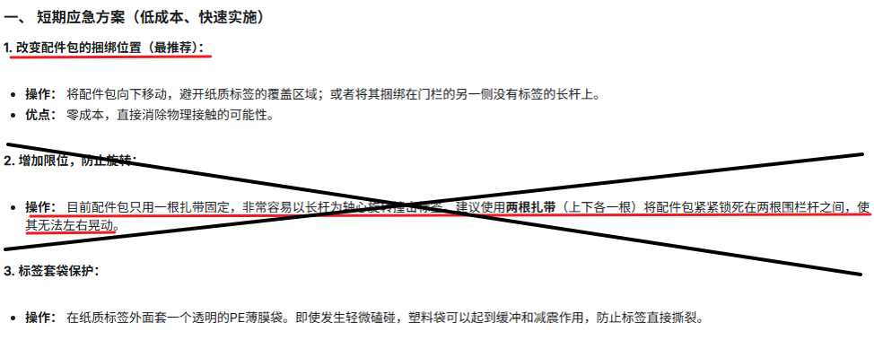
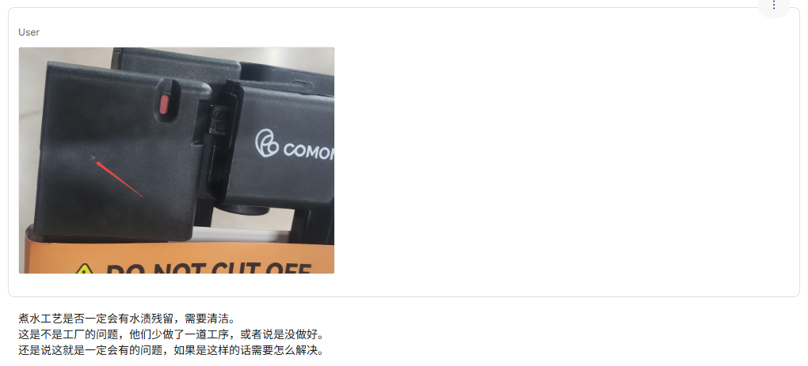
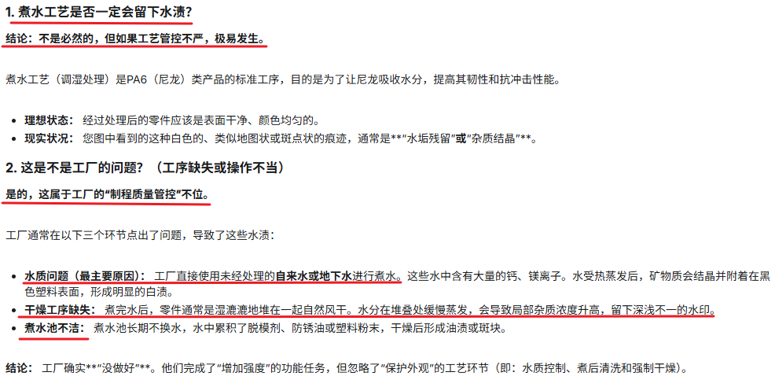
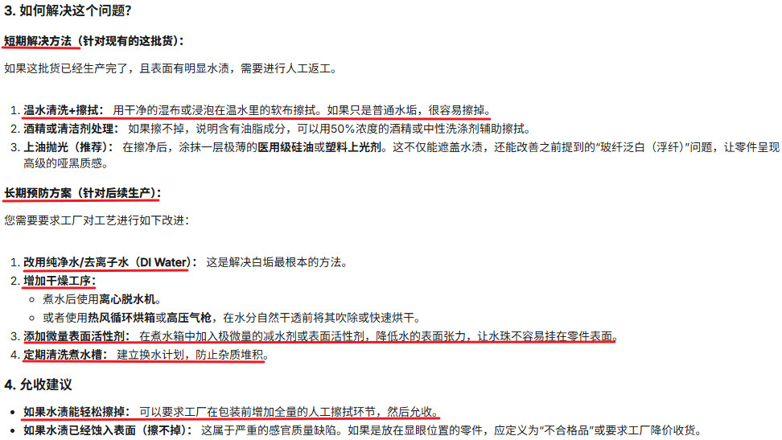
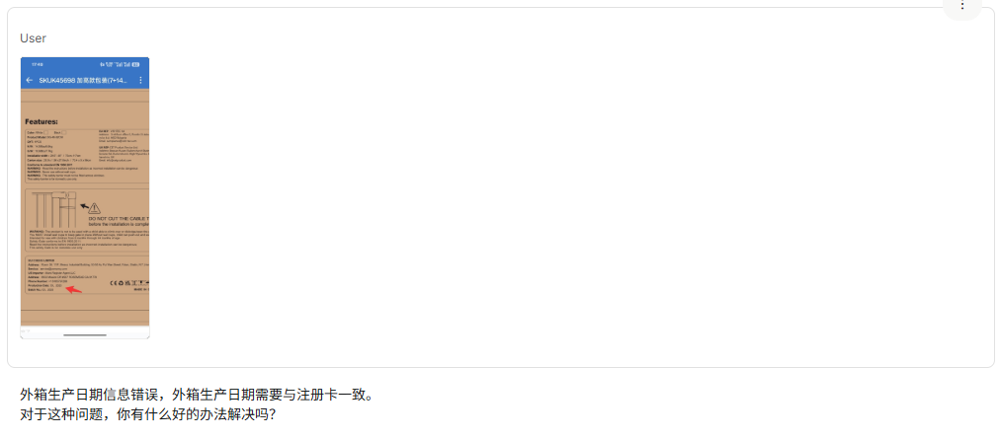
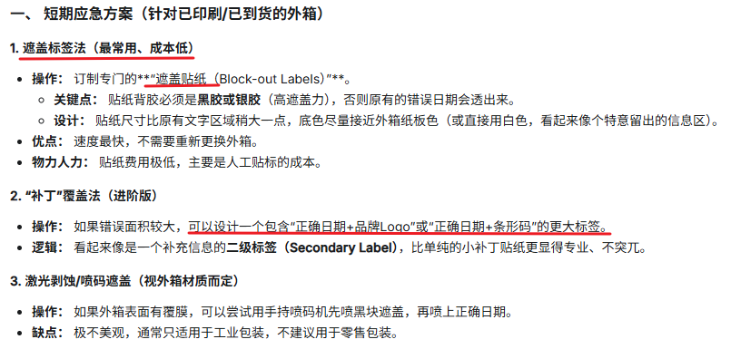

2025 PROJECT MANAGEMENT REVIEW
项目经理轮岗实战复盘报告
从“处理异常”到“规避异常”的思维进化
汇报人：关志邦 (PM-Trainee)
导师：月桂 (PM)
周期：Week 4 - Week 5
导师：月桂 (PM)
周期：Week 4 - Week 5
板块一：异常案例-TR5 试产
| 项目背景 | 核心挑战与问题 | 决策动作、结果与 AI 协同 |
|---|---|---|
|
项目 A: 开模加高门栏 项目处于 TR5 试产节点，SQE 到工厂去试产。 |
玻纤材料配比未按要求 PA6+10 玻纤（实际添加 15%玻纤），强度测试符合要求，但对外现观有影响。 用料配比不符 |
结果： PDT 成员评估达到强度测试，认为风险低，首单允收；但要求返单必须改回 10% 玻纤 + PA6 尼龙材料。
    |
| 易碎标签包装过程中容易磕碰破损。 包装异常 |
结果： 更换配件固定位置，避免扎带划伤易碎标签，并在包装前增加专项检查工序。
  |
|
| 塑胶件煮水后有水渍残留，影响外观。 制程工艺 |
结果： 这批次需要全数返工清洗并人工擦拭；明确要求包装前必须清洁外观并检验合格。
   |
|
| 外箱生产日期信息错误，外箱日期需要与注册卡保持一致。 工厂外箱开版出错 |
结果：
1. 短期方案：遮盖原错误标签。 2. 长期方案：促进有效沟通，督促工厂完善 SOP 流程，强化正确健康的 SOP 意识。   |
板块一：异常案例-移模案例
| 项目背景与情景 | 核心挑战与问题 | 异常决策动作 |
|---|---|---|
|
移模项目异常流程处理 1. 原供应商终止合作，需紧急将模具移至新厂。 2. 属于 IRDA 核心模具，价值量大；多款门框共用套模。 |
【背景】正处于春节交付不稳定期间，要保证年前交付，需启用紧急保交付特殊流程。 |
采用先下单再试模的应急流程：提前谈好商务条款（资源） -> 前置测试产品功能&可靠性 -> 提前下订单 -> 支付定金 -> 备料 -> 试模 -> 试产。（新工厂同步启动五金制具生产） 应急流程的效用：先下单再试模让周期缩短了1-2个月（算上春节），降低了缺货风险。 (产品新增了功能&可靠性的风险点，但前置安排测试，评估风险可接受) |
|
移模过程中可能会产生碰撞、生锈等风险。 (核心模具，对应打样的产品价值量大) 涉及资源、旧厂、新厂、物流多方对齐。 (新厂需要紧急接收订单) |
交接前： 点检确认，监督工厂进行模具清洁、保养，约车运输。 运输中： 采用木箱打钉固定、珍珠棉全包覆、核对司机与车辆身份信息，跟进装车、确保模具固定好，跟进到目的地进度。 提前与接收工厂对接信息，提前准备好接收模具准备工作，签收模具拍照，接收视频确认交收。 接收后： 进行点检确认并反馈异常。 （目前处于试模中，工厂试模样品未煮水，工厂确认会改正，后续需要监督。） |
💡 总结与心得
1. 灵活变通：
在时间紧张、项目价值量大的情况下，项目管理需具备“风险前置”的思维。
2. 核心资产的保护：
移模中的保护（珍珠棉、木箱）看似琐碎，实则是保资产的关键。
3. 多方对齐：
资源、工厂、物流三方的信息对齐是异常流程跑通的前提。
在跟踪 - 冬季 (猫屋 & 猫窝) 系列推进看板
1. 品类全景矩阵（ai测算：8月底9月初GA —— 5月中交付 —— 3月底下单）
A 加热猫屋 (Heated Cat House)
| 面料系列 | 配置 / 功能点 | 研发状态 |
|---|---|---|
| 牛津布系列 S / M / L |
基础款 (不加热) | 测试中 SML码都有鼓包问题、尺寸超出（tr4） |
| 恒温款 (加热垫) | 1.10 前 寄样（tr3） | |
| 自研智能款 (重量感应+温控) | 控制器确认3d样中（tr3） |
B 抽条兔绒猫窝 (Cat Bed)
| 面料系列 | 配置 / 功能点 | 研发状态 |
|---|---|---|
| 抽条兔绒系列 S / M |
基础款 (不加热) | 1.8 前 寄样（tr3） |
| 控制盒加热款 (加热垫) | 1.3 前 寄样（tr3） | |
| 自研智能款 (重量感应+温控) | 控制器确认3d样中（tr3） |
2. 项目策略与风控思维
🛠️ 模块化整合策略 (核心共用件)
加热垫采取“一垫多用”：统一开发标准适配全系列。(目前测试中、无异样)
🎨 并行任务策略 (进度提速)
打样、包装刀模尺寸压缩、调整包装外箱多任务并行。加速项目进度。
🛡️ 拒绝理想化思维
针对异常（如测试失败）须提前准备“失控补救方案”，做最坏打算。
3. 核心管理逻辑
| 维度 | 动作指南 |
|---|---|
| 进度预警 | 加热款与自研款属于冬季季节品，要从 GA 倒推 下单&交付 时间，把控项目节奏。 |
| 风险对冲 | IRDA 自研项目，预留足够的时间进行技术验证和Beta测试，降低风险，前置测评。 |
| 跟进方式 | 结果导向追问：追问模具“具体出物”，而非进度描述。 |
板块二：项目流程要点总结
需求与填写
-
组织与动作
-
交付表格
-
异常关注点
-
后续工作计划与能力进阶
🎯 W6 项目轮岗
- 项目跟进： 试模项目跟进、IRD项目--冬季加热猫屋、猫屋推进流程。
- 知识沉淀： 最终定稿项目协作避坑要点，确保经验可复刻。回顾 SOP 全流程，完成项目轮岗阶段总结。
🧪 W7 测试轮岗
- 正式进入测试轮岗，完成思维与岗位切换。
- 开始接触学习测试专业知识、标准及工具使用。